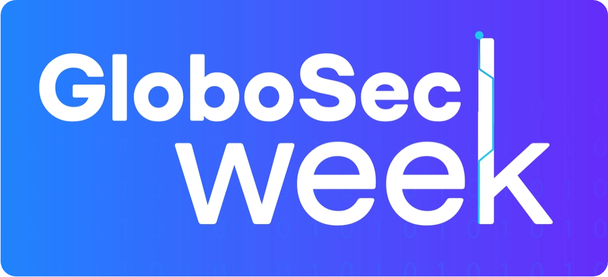

Edição 2025.
[GloboSec Week] Links:
📆 Eventos de Tecnologia e SegInfo
- 50 principais eventos de Tecnologia no mundo (2026)
- Mapa Interativo com diversos eventos de Segurança no Brasil e no mundo
🧠 Guias de Estudo e referências
-
Iniciando em Segurança da Informação
- Repositório de Cursos, Certificações e outras coletâneas de links úteis para quem está iniciando
- Autora: Sabrina Ramos (@meninadecybersec)
-
30 Days of Cybersecurity
- Guia de estudos para iniciantes com 30 dias de desafios, atividades e materiais preparatórios para atuar no mercado de Cibersegurança
- Autora: Sabrina Ramos (@meninadecybersec)
-
Desenvolvimento Seguro de Aplicações:
-
Plataformas de Estudo
-
Let's Defend
- Simulação de incidentes, playbooks e cursos voltados para cibersegurança.
- Foco: Cibersegurança Defensiva (Blue Team)
-
TryHackMe
- Laboratórios práticos sobre hacking ético e defesa.
- Foco: Cibersegurança Ofensiva (Red Team)
-
Let's Defend
🏅 Certificações em Segurança
-
Security Certification Roadmap - Paul Jerimy Media
- Quadro geral de certificações em Segurança, custos e links com mais informações
- Autor: Paul Jerimy
-
Certificações Relevantes (com chances de voucher gratuito)